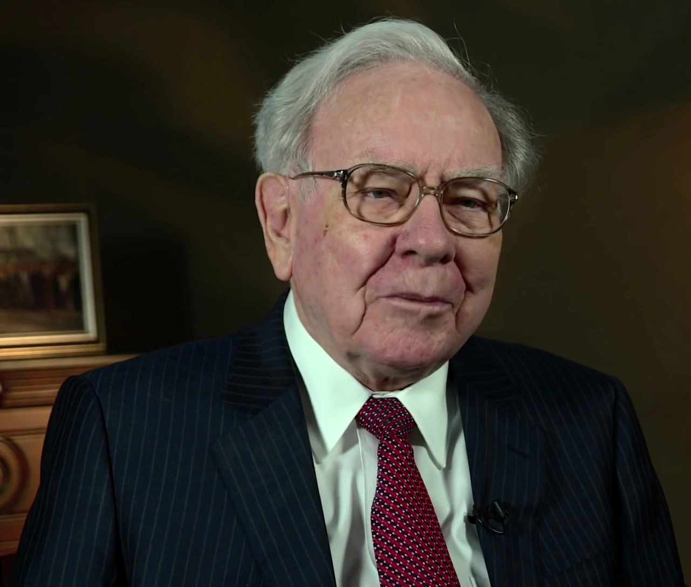
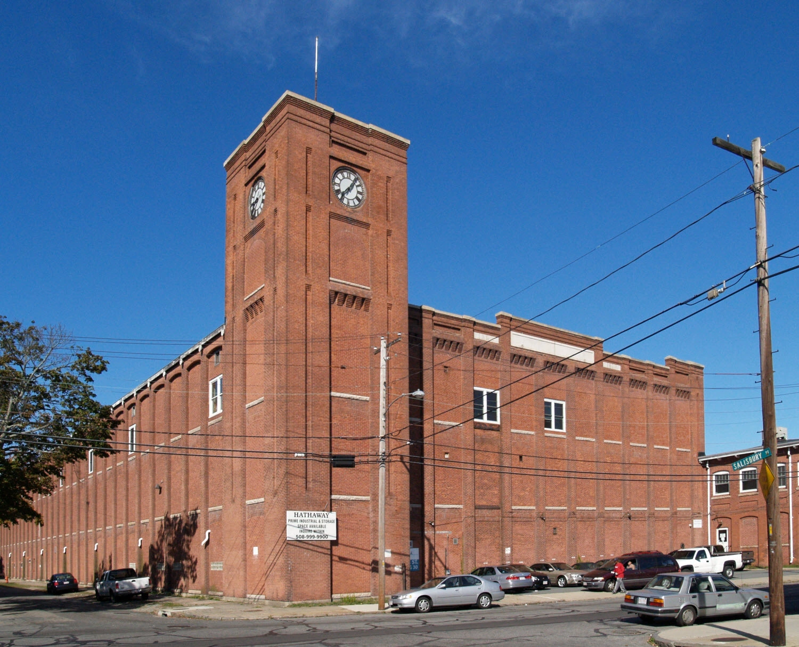
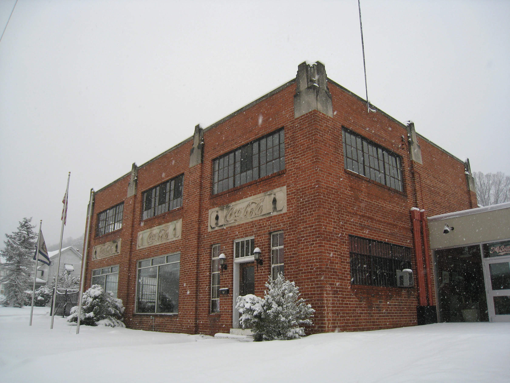

In the spring of 1964 Seabury Stanton, the president of a shrinking New England textile company called Berkshire Hathaway, asked one of their investors, a 33-year-old from Omaha, at what price he would sell his shares. Warren Buffett said $11.50. "Fine, we have a deal," said Stanton.
However, shortly afterwards, Seabury Stanton reneged on that agreement, and the written offer came in at $11.375. Irritated by what he called "Stanton's chiseling", Mr Buffett kept his shares and purchased more. At a board meeting in May 1965, he took control of the company. He had acquired a group of mills that could not match the price of cloth made more cheaply elsewhere, and he had done it over twelve and a half cents a share. "That was a monumentally stupid decision," he wrote half a century later.
One of the best records in investing therefore began with a poor investment decision. However, from 1965 to the end of 2025, when Warren Buffett stepped down as chief executive, Berkshire Hathaway shares rose by 19.7% a year, compounded. The S&P 500, with dividends reinvested, managed just 10.5%. Putting this another way, the shares gained 6,099,294% and the index just 46,061%.
The last Berkshire Hathaway mill closed in 1985, but the name survived on a company that by then owned insurers, a sweet-maker and a stake in the Washington Post, and later a railway, power utilities and a large holding in Coca-Cola, as well as American Express.

Warren Buffett was born in Omaha on 30 August 1930, ten months after the Wall Street crash. His father, Howard Buffett, was a stockbroker who later sat in Congress. As a boy, Warren liked numbers and liked money, and saw no reason to wait for either. At 11, he bought three shares of Cities Service preferred. At 14, he purchased 40 acres of Nebraska farmland for $1,200, and at 15, he and a friend were putting a pinball machine into a barber shop as an investment.
When the 19-year-old Warren was turned down for Harvard Business School, he went to Columbia instead, where Benjamin Graham taught. It was this relationship that would help drive some of his greatest successes.
Benjamin Graham gave him a greater understanding of investment strategy: that a share was a fractional claim on a business, that a business had a value that could be estimated, and that the market's daily opinion of that value could be ignored until it was wrong enough to be useful. "Price is what you pay; value is what you get," Mr Buffett would repeat, always crediting Benjamin Graham.
After two years of working at Benjamin Graham's firm in New York, he went home in 1956 and set up a partnership to invest money for family and friends. Two years later, he paid $31,500 for a house in Omaha. He called it "my first and only home".
In these earlier years of his investment funds, he purchased what he called cigar butts, companies so cheap that it barely mattered how bad they were. "A cigar butt found on the street that has only one puff left in it may not offer much of a smoke, but the 'bargain purchase' will make that puff all profit." This was a strategy that worked while the sums were small.
Once he was the owner of Berkshire Hathaway, however, it became obvious that any money that went back into the mills earned a poor return. "My first mistake, of course, was in buying control of Berkshire," says Mr Buffett.

He was talked out of this strategy by Charlie Munger, a lawyer who had also grown up in Omaha. Charlie Munger's advice, as Mr Buffett later set it down, was: "Forget what you know about buying fair businesses at wonderful prices; instead, buy wonderful businesses at fair prices."
In 1972, this strategy came to the fore with the purchase of See's Candies, a Californian chocolate-maker. The See's family wanted $30m for the business. Warren Buffett offered $25m, and the family accepted. By 2014, See's had earned $1.9bn before tax and had needed only $40m of further investment along the way. In his 1989 letter to shareholders, Mr Buffett says: "It's far better to buy a wonderful company at a fair price than a fair company at a wonderful price."
Stock picking isn't the only thing that Warren Buffett was good at. Berkshire Hathaway started investing in small insurers, beginning in 1967 with National Indemnity, an Omaha insurer purchased for $8.6m.
An insurer is paid its premiums first by its customers and settles its claims later, sometimes many years later, and in the meantime it holds this money. Warren Buffett took this money, known as float, and invested it. This amounted to borrowing at little cost from lenders who would not ask for their money back, specifically if the stock market was doing poorly. By the end of 2025 Berkshire Hathaway's float stood at $176bn. It is still money that is owed to customers, however, and it only comes cheaply if the insurer charges enough to cover its claims.
Similarly, the businesses that Berkshire Hathaway owned outright sent their spare money to headquarters instead of keeping it within their separate entities. And because Berkshire Hathaway was a listed company and not a fund, shareholders who no longer believed in the strategy could sell their shares to someone else, but they could not take their money out and cause a funding issue for the operation, as has happened with other funds in the past. This is what allowed Mr Buffett to say, in his 1988 letter, that "our favorite holding period is forever."

Coca-Cola is a good example of this long-term holding. Berkshire Hathaway started purchasing the shares in 1988, and by August 1994 it owned 400m of them, adjusted for later share splits, at a total cost of $1.3bn. The dividend received on those shares was $75m in 1994, and by 2022 this had risen to $704m. "Growth occurred every year, just as certain as birthdays," says Mr Buffett. "All Charlie and I were required to do was cash Coke's quarterly dividend checks."
American Express is a similar story. Berkshire Hathaway's purchases were essentially completed in 1995, and also cost $1.3bn. The annual dividend on that holding grew from $41m to $302m by 2022.
However, these figures only show how good the original purchases were. They do not say whether the shares are worth purchasing at today's price.
Warren Buffett has also been open about the investments that went wrong. The worst, by his own reckoning, was Dexter Shoe, a shoemaker in Maine, which Berkshire Hathaway purchased in 1993 for $433m. The advantage that Mr Buffett thought it had over its competitors was gone within a few years.
However, the bigger problem was that he had paid for Dexter in Berkshire Hathaway shares instead of cash, and as those shares went up in value, so did the real cost of the purchase. By 2007 the cost to shareholders was "not $400 million, but rather $3.5 billion". "To date, Dexter is the worst deal that I've made," says Mr Buffett.
Reputation was something that Warren Buffett took very seriously. In 1991 Salomon Brothers, a Wall Street bank in which Berkshire Hathaway had a large holding, was caught submitting false bids at auctions of US Treasury securities. Mr Buffett stepped in as chairman for the best part of a year, and told Congress what he had already told the bank's staff: "Lose money for the firm, and I will be understanding; lose a shred of reputation for the firm, and I will be ruthless."
Warren Buffett also stayed away from investments that he did not understand, even when it cost him in the short term. In 1999, with technology shares soaring, he declined to purchase them. Berkshire Hathaway shares fell by 19.9% that year while the index rose by 21.0%, and Mr Buffett told shareholders it was his worst performance against the S&P 500 since taking over.
Two years later, his letter to shareholders included one of his best-known lines: "you only find out who is swimming naked when the tide goes out." The year after that, he described derivatives as "financial weapons of mass destruction, carrying dangers that, while now latent, are potentially lethal".
Lehman Brothers then failed in 2008. However, Berkshire Hathaway was in a position to invest when others could not, and Mr Buffett followed a rule from his 1986 letter: "to be fearful when others are greedy and to be greedy only when others are fearful". Eight days after Lehman Brothers failed, Berkshire Hathaway put $5bn into Goldman Sachs. In 2009 it agreed to purchase the Burlington Northern Santa Fe railway, which Mr Buffett called "an all-in wager on the economic future of the United States".
The record is not perfect, however, and the size of Berkshire Hathaway worked against it in the later years. The shares fell by 48.7% in 1974. In 2020 they rose by just 2.4% while the index rose by 18.4%. As Berkshire Hathaway grew, fewer purchases were large enough to make a difference, and at the end of 2025 it held more than $370bn in cash and US Treasury bills.
The 19.7% a year covers a period that began with a small textile company and ended with one of the largest businesses in the world. It should be read as a record of the past and not as a forecast, either for Berkshire Hathaway or for anyone copying it.

Away from investing, Warren Buffett's life changed very little. He stayed in Omaha, explained his decisions each year in letters that a beginner could follow, and answered shareholders' questions for hours at an annual meeting he called "Woodstock for Capitalists". In 2006 he promised most of his fortune to philanthropy, and by the middle of 2025 he had given away more than $60bn.
Mr Buffett puts much of his success down to luck. "I was born in 1930 healthy, reasonably intelligent, white, male and in America. Wow! Thank you, Lady Luck."
In November 2025 Warren Buffett told shareholders that he would no longer be writing the annual report. "As the British would say, I'm 'going quiet.' Sort of." His last piece of advice in that letter had nothing to do with shares: "Keep in mind that the cleaning lady is as much a human being as the Chairman."
Greg Abel, his chosen successor, became chief executive on 1 January 2026. On 18 September 2026, aged 96, Mr Buffett also handed the chairmanship to his son, Howard, and took the title of chairman emeritus. "Father Time always wins," he said. "He has, however, been generous with me."
He remains a director of Berkshire Hathaway, and he still lives in the house that cost $31,500.
The record
| Year | Berkshire per-share market value | S&P 500, including dividends |
|---|---|---|
| 1965 | +49.5% | +10.0% |
| 1974 | −48.7% | −26.4% |
| 1976 | +129.3% | +23.6% |
| 1999 | −19.9% | +21.0% |
| 2008 | −31.8% | −37.0% |
| 2020 | +2.4% | +18.4% |
| 2022 | +4.0% | −18.1% |
| 2024 | +25.5% | +25.0% |
| 2025 | +10.9% | +17.9% |
| 1965–2025, compounded annually | 19.7% | 10.5% |
| 1964–2025, overall gain | 6,099,294% | 46,061% |
Figures are from the performance table in Berkshire Hathaway's 2025 annual report. They are the change in Berkshire Hathaway's own share price, in US dollars, and so reflect its operating businesses and insurance float as well as its quoted investments.
Life in dates
- 1930Born in Omaha, Nebraska, on 30 August.
- 1951Graduates from Columbia Business School, where he studied under Benjamin Graham.
- 1956Sets up Buffett Partnership in Omaha.
- 1965Takes control of Berkshire Hathaway.
- 1967Berkshire Hathaway purchases National Indemnity for $8.6m.
- 1972Purchases See's Candies for $25m.
- 1985Closes the last of the textile mills.
- 1988–94Builds the Coca-Cola holding at a cost of $1.3bn.
- 1991Steps in as chairman of Salomon Brothers.
- 1993Purchases Dexter Shoe for $433m in Berkshire Hathaway shares.
- 1995Completes the American Express holding at a cost of $1.3bn.
- 2008Invests $5bn in Goldman Sachs during the financial crisis.
- 2023Charlie Munger dies on 28 November.
- 2026Greg Abel becomes chief executive on 1 January. Howard Buffett becomes chairman on 18 September.
Sources
- Berkshire Hathaway 2025 annual report: performance table, insurance float, cash and Treasury holdings.
- Buffett's 2014 letter: the Stanton tender offer, National Indemnity, See's Candies, the Munger blueprint.
- Buffett's 1989 letter: "Mistakes of the First Twenty-five Years", cigar butts.
- Buffett's 1988 letter: holding period, the first Coca-Cola purchases.
- Buffett's 1986 letter: fearful and greedy.
- Buffett's 1999 letter: the year's performance against the S&P 500.
- Buffett's 2001 letter and 2002 letter: swimming naked, derivatives.
- Buffett's 2007 letter: Dexter Shoe.
- Buffett's 2008 letter: price and value.
- Buffett's 2022 letter: Coca-Cola and American Express dividends.
- Buffett's letter to shareholders, 10 November 2025: "going quiet", the Omaha house, Lady Luck.
- Berkshire news release, 18 September 2026: change of chairman.
- Goldman Sachs press release, 23 September 2008: Berkshire Hathaway's $5bn investment.
- Berkshire and BNSF announcement, 3 November 2009: the railway purchase.
- Buffett's opening statement on Salomon Brothers, 1991: testimony to Congress, as reproduced by a third party.